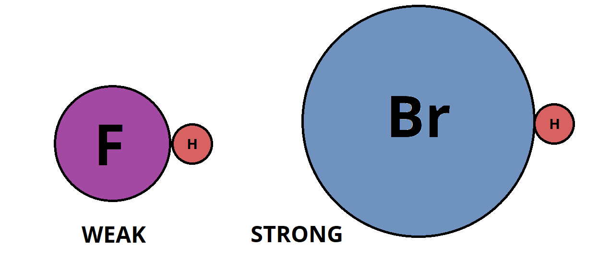
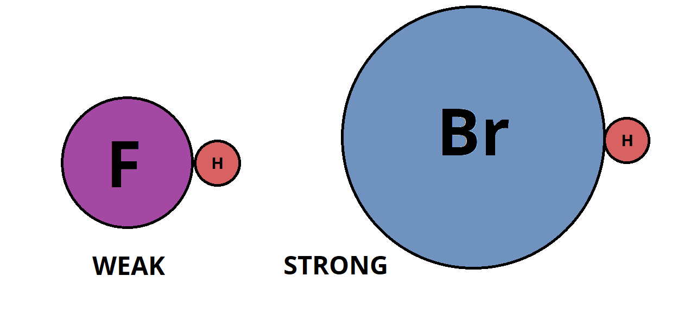

Acids and Bases
Definitions
Bronsted-Lowry Concept of Acids and Bases (1923):
This might be a bit weird at first, as things that you don't normally think are acids (like water) can act like an acid or base depending on the reaction. You'll get used to it soon.
Conjugate Acid Base Pair: 2 species that differ by a proton. (See example below)
- Acid: A proton donater (Gives away H+ ions, or protons)
- Base: A proton acceptor (Takes H+ ions)
This might be a bit weird at first, as things that you don't normally think are acids (like water) can act like an acid or base depending on the reaction. You'll get used to it soon.
Conjugate Acid Base Pair: 2 species that differ by a proton. (See example below)
Example
This is the reaction of acetic acid reacting with water:

As you can see, the acid has a conjugate base (which is the acid minus a H+), and the base (water) has a conjugate acid (which is the base plus a H+)
As you can see, the acid has a conjugate base (which is the acid minus a H+), and the base (water) has a conjugate acid (which is the base plus a H+)
Extra Notes: The H3O+ ion is called the hydronium ion. Sometimes, people write H+
instead of H3O+ in the reaction but it still means the same thing.
Acids and Ionization
Most acids are weak and only a very small part of it ionizes (turns into the conjugate base). For the reaction
HA + H2O ⇌ H3O+ + A-
(Where HA is an acid) you can calculate a Ka value, which is called the acid ionization constant. Don't worry, it's the same as the K you learned about earlier, it just has a special name:Ka = [H3O+][A-] / [HA]
Remember, exclude pure liquids (water) from calculating KSome Examples (Look Carefully)
Write the Ka expression for the following:1) HF + H2O ⇌ H3O+ + F-
Answer:
Ka = [H3O+][F-] / [HF]
2) NH4+ + H2O ⇌ H3O+ + NH3
Answer:
Ka = [H3O+][NH3] / [NH4+]
3) [Al(H2O)6]3+ + H2O ⇌ H3O+ + [Al(H2O)5(OH)]2+
Answer:
Ka = [H3O+][[Al(H2O)5(OH)]2+] / [ [Al(H2O)6]3+]
Properties of Acids and Bases
Acid: Turns blue litmus paper red. Tastes sour, reacts with metals to form hydrogen gas, creates ions in water.
Base: Turns red litmus paper blue. Tastes bitter, slippery feel, creates ions in water.
Base: Turns red litmus paper blue. Tastes bitter, slippery feel, creates ions in water.
Strengths of Acids and Bases
The stronger the acid, the weaker it's conjugate base, and vice versa. Strong acids like HCl have a conjugate base strength of virtually 0
(That's less than the conjugate base strength of water! Remember this for your exam, you will be asked to sort strengths of acids and conjugate bases!)
Strong acids: HCl HBr HI H2SO4 HNO3 HClO4 HClO3*
Weak acids: Literally any other acid.
Strong acids: HCl HBr HI H2SO4 HNO3 HClO4 HClO3*
Weak acids: Literally any other acid.
Oxyacids
Acids that have a hydrogen bonded to an oxygen (Has a polyatomic ion). Just know the definition (Not very important, 60% chance you'll
be fine on a test or quiz if you forget this).
Types of Acids
- Monoprotic acids - 1 ionizable hydrogen, ie HClO4
- Diprotic acid - 2 ionizable hydrogens, ie H2SO4
- Organic acid - Contains a carbon backbone, ie HC2H3O2
Water as an Acid and a Base
Amphoteric: Acts as an acid or a base, ie water.
Autionization: 2 molecules of the same species react to form ions. Example:
If a solution is acidic, [H3O+] > 1e-7 M ([OH-] < 1e-7 M)
If a solution is basic, [OH-] > 1e-7 M ([H3O+] < 1e-7 M)
Autionization: 2 molecules of the same species react to form ions. Example:
H2O + H2O ⇌ H3O+ + OH-
You can write an autoionization constant of water:Kw = [H3O+][OH-]
- In pure water the concentrations of both ions are equal
- At room temperature (25 C) Kw = 1e-14 (Changes with temperature)
If a solution is acidic, [H3O+] > 1e-7 M ([OH-] < 1e-7 M)
If a solution is basic, [OH-] > 1e-7 M ([H3O+] < 1e-7 M)
Given [OH-] = 3.9e-11 M at 25 C, is the solution acidic or basic? Also find [H3O+]
Answer:
[H3O+] = 1e-14 / 3.9e-11 = 2.6e-4 M
2.6e-4 > 1e-7, so solution is acidic.Find [OH-] in a neutral solution at 60 C, given Kw = 1e-13
Answer:
[H3O+][OH-] = 1e-13
[OH-] = [H3O+]
Solving, [OH-] = 3e-7 M
Extra Notes: The autoionization of water is endothermic, as the temperature increases so does Kw
pH scale
pH stands for pouvoir de hydrogen. It is equal to:
Neutral pH = 7, below 7 is acidic, above 7 is basic. Note that pH can go below 0 and above 14, contrary to what you might believe. Also pH has no unit, it's just a number. Also defined is pOH, which is
pH = -log([H3O+])
log = log base 10Neutral pH = 7, below 7 is acidic, above 7 is basic. Note that pH can go below 0 and above 14, contrary to what you might believe. Also pH has no unit, it's just a number. Also defined is pOH, which is
pOH = -log([OH-])
pOH + pH = 14
What is the pH of 0.0012 M OH- solution at 25 C
Answer:
pOH = -log(0.0012) = 2.92
pH = 14 - 2.92 = 11.08
NOTE: You'll notice our pH value has more sig figs than the inital concentration (2 sig figs). This is because pH is doing a log - the sig figs only count for the part after the decimal point. We started with 2 sig figs, so we should have 2 sig figs after the decimal point, which we do: 11.08Given the pH of diet soda is 4.32 at 25 C, find [OH-] and [H3O+]
Answer:
[H3O+] = 10-4.32 = 4.8e-5 M
[OH-] = 10-(14 - 4.32) = 2.1e-10 M
NOTE: Same as above, we only consider sig figs after the decimal point. We started with 2 (4.32), so our answer should only have 2 sig figspH of Strong Acids
Strong acids are so strong that nearly all of the molecules ionize into H+. Thus,
For example, if I started with a 0.15 M HBr solution, the pH would be
[H3O+] = [Acid]inital
For example, if I started with a 0.15 M HBr solution, the pH would be
-log(0.15) = 0.82
pH of Weak Acids
You'll need to do some algebra - this is best explained through example.
Example: pH of a 0.25 M solution of HCN, given Ka = 6.2e-10
Draw an ICE box diagram to solve:
Now plug in the equilibrium concentrations into the equation above:
A lot more work huh? I have a calculator (TI-83 or 84) program to solve this, you can copy it below. It also calculates -log(x) and log(x) + 14 for you!
Another shortcut: if [Acid] > 100 * Ka, you can plug in [Acid] instead of [Acid] - x into the equation, because x will be so small compared to [Acid] that it doesn't affect the answer. (Note: this is just a general rule, sometimes you might be off by a sig fig if you do this.)
Example: pH of a 0.25 M solution of HCN, given Ka = 6.2e-10
Ka = [H3O+][CN-] / [HCN]
Draw an ICE box diagram to solve:
| HCN + | H2O ⇌ | H3O+ + | CN- | |
| I | 0.25 | 0 | 0 | |
| C | -x | +x | +x | |
| E | 0.25 - x | x | x |
Now plug in the equilibrium concentrations into the equation above:
6.2e-10 = x2 / (0.25 - x)
And solve for x, you should get x = 1.245e-5. Now to get the pH, take the -log of that:-log(1.245e-5) = 4.90
A lot more work huh? I have a calculator (TI-83 or 84) program to solve this, you can copy it below. It also calculates -log(x) and log(x) + 14 for you!
: Disp "X^2/(Y-X) = Z : Prompt Y,Z : √(Z) * √(4*Y*Z) → A : 0.5 * (A-Z) → B : 0.5 * (-A-Z) → C : Disp B,C : Disp "-log(X) log(X) + 14 : Disp -log(abs(B)) : Disp log(abs(B)) + 14
Another shortcut: if [Acid] > 100 * Ka, you can plug in [Acid] instead of [Acid] - x into the equation, because x will be so small compared to [Acid] that it doesn't affect the answer. (Note: this is just a general rule, sometimes you might be off by a sig fig if you do this.)
Mix of Weak Acids
If you have a mixture of weak acids, first solve for the stronger acid (bigger Ka) then solve the weaker acid.
Example: You have a mixture of 1.00 M HCN and 5.00 M HNO2. Find the pH. Ka = 4.0e-4 (HNO2), 6.2e-10 (HCN)
First we determine the stronger acid, which is HNO2. Do the ICE box:
x = 0.0445, thus [H3O+] = 0.0445 M. Now make a 2nd ICE box for the weaker acid:
Note we plugged in 0.0445 M as the inital concentration of [H3O+] in the 2nd icebox. Solve:
NOTE: The 2nd Ka was so small compared to the first one that the extra [H3O+] added by the weaker acid didn't affect the pH. If this happens, you can skip the 2nd acid because it doesn't affect the pH much at all. (Be careful to know when to do this)
Example: You have a mixture of 1.00 M HCN and 5.00 M HNO2. Find the pH. Ka = 4.0e-4 (HNO2), 6.2e-10 (HCN)
First we determine the stronger acid, which is HNO2. Do the ICE box:
| HNO2 + | H2O ⇌ | H3O+ + | NO2- | |
| I | 5.00 | 0 | 0 | |
| C | -x | +x | +x | |
| E | 5.00 - x | x | x |
x = 0.0445, thus [H3O+] = 0.0445 M. Now make a 2nd ICE box for the weaker acid:
| HCN + | H2O ⇌ | H3O+ + | CN- | |
| I | 1.00 | 0.0445 | 0 | |
| C | -x | +x | +x | |
| E | 1.00 - x | x + 0.0445 | x |
Note we plugged in 0.0445 M as the inital concentration of [H3O+] in the 2nd icebox. Solve:
(x + 0.0045)(x) / (1.00 - x) = 6.2e-10
x = 1.39e-8. To get the pH take -log of final [H3O+]:pH = -log(1.39e-8 + 0.0045) = 1.35
NOTE: The 2nd Ka was so small compared to the first one that the extra [H3O+] added by the weaker acid didn't affect the pH. If this happens, you can skip the 2nd acid because it doesn't affect the pH much at all. (Be careful to know when to do this)
Percent Dissocation
% Dissocation = [Ions formed] / [Inital acid]
Example: Calculate % Dissocation of a 5.00 M acetic acid solution. Repeat with 0.500 M. Ka = 1.8e-5x2 / (5.00 - x) = 1.8e-5
x = 0.0095. % Dissocation = 0.0095 / 5.00 = 0.19%For the 0.500 M solution:
x2 / (0.500 - x) = 1.8e-5
x = 0.0030. % Dissocation = 0.0030 / 0.500 = 0.60%As you can see, diluting the acid shifts the equilibrium to the side with more moles of ions, resulting in a higher percent dissocation.
Strong Bases and pH
Strong bases:
LiOH NaOH KOH RbOH CsOH Ca(OH)2 Sr(OH)2 Ba(OH)2
Same as strong acids, but you find the pOH first then get the pH.
Same as strong acids, but you find the pOH first then get the pH.
Find the pH of 0.25 M Ba(OH)2
Answer:
Ba(OH)2 → Ba2+ + 2OH-
There are 0.50 M OH- in the solution.pOH = -log(0.50) = 0.30
pH = 14 - pOH = 13.70
Weak Base and pH
Same as weak acid, except you get a pOH instead of pH, and you use Kb instead of Ka.
What if I'm not given Kb?
If your weak base is the conjugate base of a weak acid, ie F- (Is the conj. base of HF) you can use the following formula:
What if I'm not given Kb?
If your weak base is the conjugate base of a weak acid, ie F- (Is the conj. base of HF) you can use the following formula:
Ka * Kb = Kw = 1e-14 at 25 C
Thus if you know the Ka of the weak acid (HF) you can calculate the Kb
Random Fact: An amine is an ammonia molecule with one or more of the hydrogens
replaced by something else.
Calculate the percent ionization of methydamine (CH3NH2), given pH = 12.32, Ka = 2.7e-11
Answer:
CH3NH2 + H2O ⇌ CH3NH3+ + OH-
pOH = 14 - 12.32 = 1.68
[CH3NH3+] = 10-1.68 = 0.02089
0.020892 / (x - 0.02089) = Kb
Where x = original concentrationKa = 1e-14 / 2.70e-11 = 0.00037
Solve the above equation, to get x = 1.2. To get percent dissocation, find0.02089 / 1.2 = 1.7%
Polyprotic Acids
Acids with more than 1 ionizable hydrogen. Each hydrogen is taken off 1 step at a time! For a strong
polyprotic acid, the first step goes to completion, but the 2nd step will reach an equilibrium.
What's the pH of a 3.5 M H2CO3 solution, given Ka1 = 4.3e-7, Ka2 = 5.6e-11
Answer: Icebox for first step:
| H2CO3 + | H2O ⇌ | H3O+ + | HCO3- | |
| I | 3.5 | 0 | 0 | |
| C | -x | +x | +x | |
| E | 3.5 - x | x | x |
x2 / (3.5 - x) = 4.3e-7
x = 0.0012. Proceed to the 2nd icebox:| HCO3- + | H2O ⇌ | H3O+ + | CO32- | |
| I | 0.0012 | 0.0012 | 0 | |
| C | -x | +x | +x | |
| E | 0.0012 - x | 0.0012 + x | x |
(x)(0.0012 + x) / (0.0012 - x) = 5.6e-11
(Yes I have a TI-BASIC program to solve this)
: Disp "X(X+Y)/(Z-X)=W : Prompt Y,Z,W : √(W^2 + 2*W*Y + 4*W*Z + Y^2) * 0.5 → A : A - 0.5 * (W+Y) → B : -A - 0.5 * (W+Y) → C : Disp B,C : Disp -log(abs(B)) : Disp log(abs(B)) + 14
x = 5.6e-11.
pH = -log(5.6e-11 + 0.0012) = 2.92
Shortcut: (Works when Ka2 is much smaller compared to Ka1)
The 2nd x value is really small, so the following approximates the pH within sig figs:
pH = -log(x1)
Another trick:x2 = Ka2
Since (x1 + x2) / (x1 - x2) ≅ 1Salt
An ionic compound formed between a cation (from a base) and an anion (from an acid).
Sometimes, one or more of the ions will react with water to form H3O+ or OH-,
which is called a hydrolysis reaction with water.
But when will the ions react?
Remember that the stronger the acid, the weaker the conj. base. Strong acids have very weak conj. bases, so weak that they don't react with water.So when determining if an ion will react, simply
Maybe an example would better explain it: which ion(s) from the salt NaF will react with water?
Answer:
Here's an example of the ion reacting with water:
Which ion(s) from the salt NaCl will react with water?
Answer: Neither! Both come from strong acids and bases (NaOH and HCl) so neither ion will react
NOTE: If the cation comes from an insoluble base like a hydrated metal the resulting solution is acidic. Example with AlCl3:
But when will the ions react?
Remember that the stronger the acid, the weaker the conj. base. Strong acids have very weak conj. bases, so weak that they don't react with water.So when determining if an ion will react, simply
- Determine if it comes from a strong acid/base
- If yes, it doesn't react, if no it does
Maybe an example would better explain it: which ion(s) from the salt NaF will react with water?
Answer:
- F- will react, because it comes from HF, a weak acid
- Na+ will not react, because it comes from NaOH, a strong base
Here's an example of the ion reacting with water:
F- + H2O ⇌ OH- + HF
Note that because F- is a conj. base, it makes the solution more basic (It produces OH- ions. The HF produced is pretty much negligible)Which ion(s) from the salt NaCl will react with water?
Answer: Neither! Both come from strong acids and bases (NaOH and HCl) so neither ion will react
NOTE: If the cation comes from an insoluble base like a hydrated metal the resulting solution is acidic. Example with AlCl3:
[Al(H2O)6]3+ + H2O ⇌ [Al(H2O)5(OH)]2+ + H3O+
So is a Salt Solution Acidic?
Depends on the strengths of the conj. acid/base. Here is a nice chart:
- SA + SB = Neutral
- WA + SB = Basic
- SA + WB = Acidic
- WA + WB = Depends, if Ka > Kb it's acidic, if < then basic, if equal then neutral
Is Na2HPO4 acidic, neutral or basic? Ka3 of H3PO4 = 4.8e-13
Answer: Na+ comes from NaOH, so it doesn't react with water. HPO42- on the other hand comes from H3PO4, which is a weak acid, thus it does react. However, HPO42- is an amphoteric ion as it still has an H ion. Thus we write out the two possible reactions:
HPO42- + H2O ⇌ PO43- + H3O+
HPO42- + H2O ⇌ H2PO4- + OH-
Compare the Ka and Kb of the 2 reactions:Ka = 4.8e-13
Kb = 1.6e-7
Kb > Ka, thus the solution is basicIs C6H5NH3CN acidic or basic? Ka = 6.2e-10, Kb = 3.8e-10
Answer: Since Ka > Kb, it's acidic. The two reactions are:
C6H5NH3+ + H2O ⇌ C6H5NH2 + H3O+
CN- + H2O ⇌ HCN + OH-
pH of a Salt Solution
First, find which ion in the salt reacts with water, like you did above. If neither reacts, the pH is 7. If one of them reacts,
write the equation for it, then solve for pH using an ICE box diagram.
Example: Find the pH of 0.015 M NaOCl solution, given Ka of HOCl is 3.5e-8:
Solution: First determine the ion that reacts (OCl-) and write the reaction for it:
Solving, x = 6.5e-5. Thus,
Typically in these problems only one of the ions will react with the water. I doubt you'll ever see a situation where both ions react with water (It's probably not in the cirriculum as it would be a WA + WB calculation, which was removed)
Example: Find the pH of 0.015 M NaOCl solution, given Ka of HOCl is 3.5e-8:
Solution: First determine the ion that reacts (OCl-) and write the reaction for it:
OCl- + H2O ⇌ HOCl + OH-
Next, do the ICE box. At this point you should probably be able to go straight to the equation to solve:x2 / (0.015 - x) = 1e-14 / 3.8e-5
We need to use the Kb value as OCl- is a baseSolving, x = 6.5e-5. Thus,
pOH = -log(6.5e-5)
pH = 14 - pOH = 9.82
Typically in these problems only one of the ions will react with the water. I doubt you'll ever see a situation where both ions react with water (It's probably not in the cirriculum as it would be a WA + WB calculation, which was removed)
Effects of Structure on Acid-BaseProperties
The more easily an acid can give away its hydrogen, the stronger the acid. Thus the weaker
the bond to the hydrogen, the stronger the acid.

HBr is a stronger acid than HF because of Br's larger size
A. Binary Acids
For an acid in the form HA, the bigger the atomic radius of A, the stronger the acid is.
HBr is a stronger acid than HF because of Br's larger size
B. Oxyacids
There are a few factors that affect acid strength:-
Same structure, but different central atom: Consider
HClO3, HBrO3 and HIO3. They all have the same
lewis structure, but the central atom is different.
The more electronegative the central atom is, the closer the oxygens are attracted to it (and thus the further the hydrogen is, making it easier to lose). Thus sorting the above acids by strength we get:HClO3 > HBrO3 > HIO3
-
Same central atom, different number of oxygens: The more oxygen atoms, the more electronegative
the molecule is, thus the more tightly packed the oxygens are to the central atom (and thus the further the hydrogen is, making it easier to lose).
Example:
HClO4 > HClO3 > HClO2 > HClO
-
The acid is not the "original" acid: If the acid came as a result of another acid, the original acid is stronger. For example,
H3PO4 > H2PO4-
Acid-Base Properties of Oxides
Is a substance an acid or a base? Just because it contains an OH doesn't mean it's a base always, as seen
in some of the examples above. Consider the molecule that looks like:
H - O - X
- If X is very electronegative, the O - X bond doesn't break, and the hydrogen breaks off. Thus the substance is an acid, ie HOCl
- If X is not very electronegative, the O - X bond is ionic and breaks, leaving the O - H bond. Thus the substance is a base, ie NaOH
Types of Oxides
Acidic Oxide: Non-metal oxide, acts as an acid in water. Example: